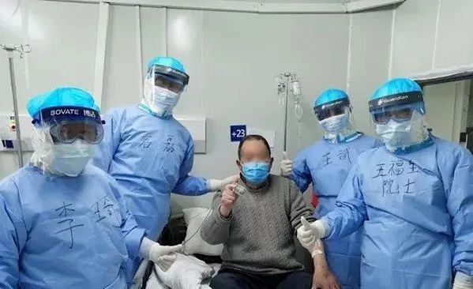
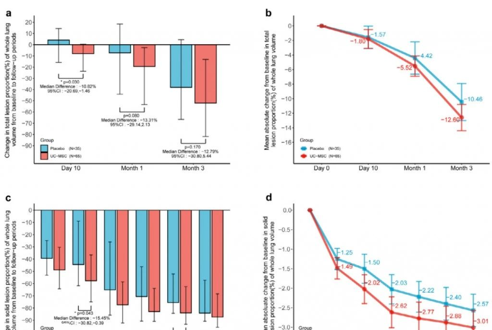
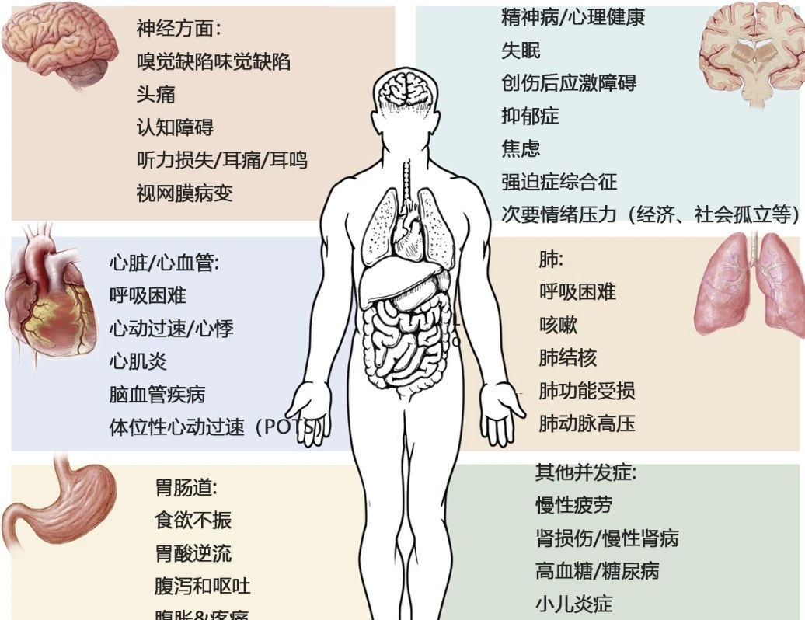
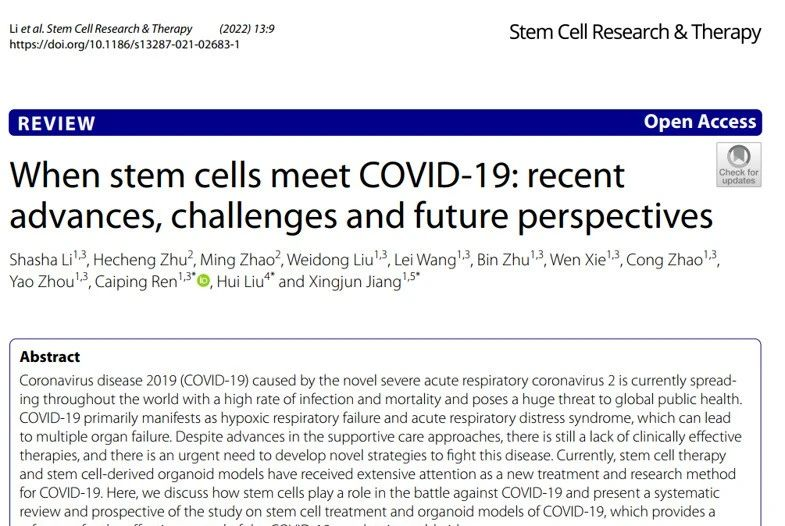
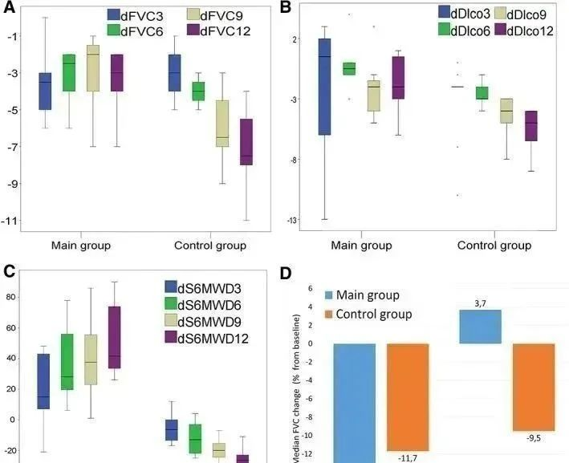

年后肝"负重"？百年春护肝美颜能量抗衰老针——给肝"松绑"，让脸发光！
2026-03-01

About Us
关于百年春
干细胞疗法成为修复肺部疾病症状的突破性方法。通过利用干细胞的再生潜力，这种创新疗法针对受损的肺组织，促进修复并减少炎症。为寻求传统治疗替代方案的患者提供了一条新途径。这项革命性技术体现了再生医学在呼吸健康领域的变革潜力。
干细胞及其独特的特性
干细胞是具有显著特性的独特细胞，具有发育成体内各种特殊细胞类型的潜力。它们的特点是具有自我更新和分化的能力，这使得它们在组织修复、再生和生长方面发挥着重要作用。这些细胞在胚胎发育和维持成人组织稳态中发挥着至关重要的作用。
目前干细胞疗法已成为解决慢性阻塞性肺病（COPD）和间质性肺病等肺部疾病的有效途径。
在干细胞治疗中，这些多功能细胞或专能细胞被用来修复受损的肺组织、减轻炎症并促进整体肺功能。这种创新方法有可能彻底改变呼吸系统疾病的治疗格局。
一些常见的肺部疾病类型
各种因素，包括环境暴露、感染和遗传倾向，都会导致肺部疾病的发生。以下是六种常见的肺部疾病：
慢性阻塞性肺疾病（COPD）：COPD是一种进行性肺部疾病，包括慢性支气管炎和肺气肿。它通常是由长期接触香烟烟雾、空气污染或工作场所灰尘和化学品等刺激物引起的。
哮喘：哮喘是一种慢性气道炎症性疾病，其特征是反复发作的喘息、呼吸困难、胸闷和咳嗽。它可能由过敏原、呼吸道感染或运动引发。
间质性肺病（ILD)：ILD是指一组引起肺组织炎症和疤痕的疾病。这些疾病使肺部难以正常运作，可能是由于暴露于环境毒素、自身免疫性疾病或未知因素引起的。
肺癌：肺癌是全世界癌症相关死亡的主要原因之一。当肺部异常细胞不受控制地繁殖，形成干扰肺功能的肿瘤时，就会发生这种情况。吸烟是主要原因，但不吸烟者也可能患上肺癌。
肺炎：肺炎是一种导致一个或两个肺部气囊发炎的感染。它可能由细菌、病毒或真菌引起，并导致咳嗽、发烧和呼吸困难等症状。
肺纤维化：肺纤维化是一种肺组织随着时间的推移而变得疤痕和增厚的疾病，使肺部难以正常运作。原因通常未知，但可能由某些药物、环境暴露或结缔组织疾病引起。
肺部疾病治疗方面，我国在医学进步方面取得了突破性的进展，包括肺部疾病的干细胞治疗。使用干细胞疗法促进受损肺组织的愈合和再生。这种创新方法有望改善患有各种肺部疾病的患者的生活质量，为更好的结果和康复带来希望。
为什么干细胞是治疗肺部疾病的最佳方法？
干细胞疗法已成为减缓肺部疾病症状的有前途的途径，提供了传统治疗之外的创新解决方案。这种突破性的方法利用干细胞的再生潜力来解决肺部疾病的各个方面，对症状的进展产生多方面的影响。以下六个要点说明了干细胞疗法如何有助于治疗肺部疾病的症状：
肺组织的再生：干细胞具有分化成各种细胞类型的卓越能力，包括肺组织中的细胞类型。当被引入受损的肺部时，这些细胞可以再生并替换损伤或病变的细胞，促进正常肺功能的恢复。
抗炎作用：干细胞具有有效的抗炎特性，有助于对抗与许多肺部疾病相关的慢性炎症。通过调节免疫反应和减少炎症，干细胞疗法旨在缓解症状并防止肺组织进一步受损。
刺激血管形成：肺组织的适当氧合对于维持呼吸功能至关重要。干细胞可以促进新血管的形成（血管生成），改善肺部受损区域的血液供应并支持组织修复。
免疫调节：干细胞在调节免疫系统方面发挥作用，防止其攻击健康的肺组织。这种免疫调节作用有助于为组织修复和再生创造更有利的环境。
生长因子的释放：干细胞释放多种支持组织愈合和再生的生长因子。这些生长因子有助于细胞增殖、分化和整体组织修复，有助于缓解肺部疾病症状。
增强呼吸功能：干细胞疗法的再生、抗炎和免疫调节作用的结合有助于改善呼吸功能。这可以减少呼吸短促、咳嗽和疲劳等症状，最终抑制肺部疾病的进展。
干细胞治疗肺部疾病的临床试验

国外相关报道
实验数据

国内研究结果，间充质干细胞组与安慰剂组相比，间充质干细胞修复组全肺病变体积改善了40.8%，并且间充质干细胞修复组在每一个随访节点都显示出固体组分病变体积比例减少。此外，间充质干细胞组有37.9%的患者在12个月时CT图像变为正常，而安慰剂组没有。
间充质干细胞可改善多种新冠后遗症

国外相关报道

针对新冠病毒对患者多脏器的伤害，全球医疗专家团队一直在努力探索更有效的康复方式，而自带“修复”“再生”光环的干细胞为人类修复新冠患者脏器损伤创造了可能。
近期，美国报道了一项纳入24例危重型COVID-19相关ARDS患者的随机、对照、双盲研究，间充质干细胞输注能显著改善患者存活率并缩短治疗时间。目前，国内外已完成多项间充质干细胞治疗新冠的临床研究，超过10项研究结果已发表。
研究结果：干细胞输注后，炎症指标改善，复查胸部CT提示双肺病灶较前吸收，呼吸道症状改善，新型冠状病毒核酸检测连续2次阴性，治愈出院。
间充质干细胞治疗慢阻肺
慢阻肺的全称为慢性阻塞性肺疾病（COPD），以持续呼吸道症状及气流受限为特征，是一种慢性气道炎症性疾病。主要是气道和肺部的炎症引起气道、肺部的结构发生改变，最终出现气流受限不完全可逆，也就是“透不上气”。
大量的临床前研究表明间充质干细胞输注可减少炎症和肺实质损伤。干细胞是一种具有多向分化潜能及自我复制能力的早期未分化细胞，可再生肺实质和气道细胞，减少炎症和肺损伤，使肺部组织保持稳态，肺功能得以维持，从而改善慢阻肺患者的肺功能，延长患者生存期。
间充质干细胞干预特发性肺纤维化
肺纤维化是成纤维细胞增殖，大量细胞外基质聚集，并伴炎症损伤、组织结构破坏为特征的一大类肺疾病终末期改变，正常的肺泡组织被损坏后，经过异常修复导致的结构异常。目前特发性肺纤维化的治疗效果并不是很理想，诊断后患者的平均生存周期只有3-5年，而间充质干细胞的治疗则为这些饱受疾病折磨的患者带来了新的希望。
2017年，著名期刊《Chest》在线发表了一项关于脐带间充质干细胞治疗特发性肺纤维化安全性临床试验。9例轻度至中度特发性肺纤维化患者分成三组，静脉输注不同浓度的间充质干细胞。60周后的评估结果表明未发生严重不良事件，证明了间充质干细胞输注治疗轻、中度特发性肺纤维化的安全性。

结论
干细胞疗法在缓解肺部疾病症状的进展方面显示出巨大的潜力。通过干细胞的再生能力，受损的肺组织可以得到修复，从而改善呼吸功能。
随着正在进行的研究展开，利用干细胞治疗肺部疾病的潜力可能会带来创新的治疗方法，为改善患者的治疗结果和呼吸系统健康的光明未来带来希望。
细胞健康了，人就健康了；
细胞有活力，人就年轻了；
细胞自在了，人就长寿了。